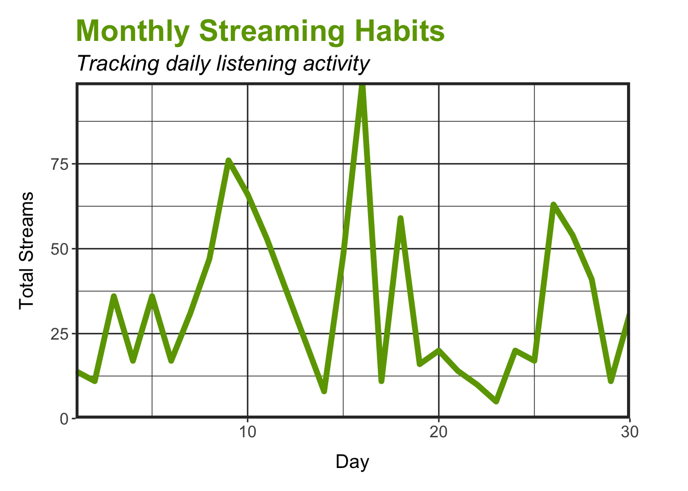
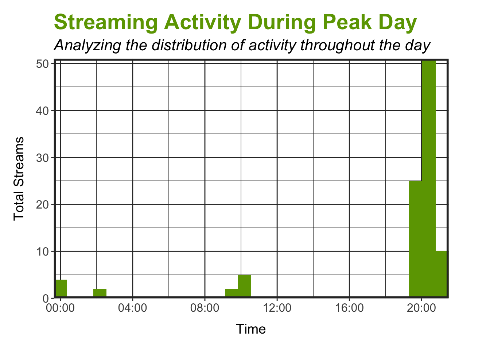

Code
library(DT)
library(hms)
library(here)
library(shiny)
library(lubridate)
library(tidyverse)
library(googlesheets4)
library(shinydashboard)library(DT)
library(hms)
library(here)
library(shiny)
library(lubridate)
library(tidyverse)
library(googlesheets4)
library(shinydashboard)raw_data <- read_sheet("https://docs.google.com/spreadsheets/d/1U2XrypJcbxnK-hb4GnnqcOejY00HU1kcCVIfWHB_Q7A/edit?usp=sharing")# Source cleaning function
source(here("scratch", "clean_data.R"))
# Clean Spotify data
spotify_data <- clean_data(raw_data)# Month
i <- 7# Plot monthly streaming habits
spotify_data[[i]] %>%
group_by(day) %>%
summarize(total_streams = n()) %>%
arrange(desc(total_streams)) %>%
ggplot(aes(x = day, y = total_streams)) +
geom_line(color = "#6ca200", linewidth = 2) +
scale_x_continuous(expand = c(0, 0)) +
scale_y_continuous(expand = c(0, 0), limits = c(0, NA)) +
labs(x = "Day",
y = "Total Streams",
title = "Monthly Streaming Habits",
subtitle = "Tracking daily listening activity") +
theme_bw() +
theme(plot.title = element_text(size = 22, face = "bold", color = "#6ca200"),
plot.subtitle = element_text(size = 16, face = "italic"),
axis.title.x = element_text(size = 14, margin = margin(t = 10)),
axis.title.y = element_text(size = 14, margin = margin(r = 10)),
axis.text = element_text(size = 12),
axis.ticks = element_line(color = "#303030"),
plot.margin = margin(t = 0.5, r = 1.5, b = 0.5, l = 0.5, "cm"),
panel.border = element_rect(linewidth = 2, color = "#303030"),
panel.grid = element_line(color = "#303030"))
# Identify the highest streaming day
spotify_data[[i]] %>%
group_by(month, day) %>%
summarize(total_streams = n(), .groups = "drop") %>%
arrange(desc(total_streams)) %>%
slice_head(n = 1) %>%
mutate(message = paste("Peak day for streams was", month, day,
"with a total of", total_streams, "streams!")) %>%
pull(message) %>%
print()[1] "Peak day for streams was July 10 with a total of 71 streams!"# Plot listening activity for highest streaming day
spotify_data[[i]] %>%
group_by(day) %>%
mutate(total_streams = n()) %>%
ungroup() %>%
filter(total_streams == max(total_streams)) %>%
ggplot(aes(x = time)) +
geom_histogram(fill = "#6ca200") +
scale_x_time(expand = c(0, 0), labels = scales::time_format("%H:%M")) +
scale_y_continuous(expand = c(0, 0)) +
labs(x = "Time",
y = "Total Streams",
title = "Streaming Activity During Peak Day",
subtitle = "Analyzing the distribution of activity throughout the day") +
theme_bw() +
theme(plot.title = element_text(size = 22, face = "bold", color = "#6ca200"),
plot.subtitle = element_text(size = 16, face = "italic"),
axis.title.x = element_text(size = 14, margin = margin(t = 10)),
axis.title.y = element_text(size = 14, margin = margin(r = 10)),
axis.text = element_text(size = 12),
axis.ticks = element_line(color = "#303030"),
plot.margin = margin(t = 0.5, r = 1.5, b = 0.5, l = 0.5, "cm"),
panel.border = element_rect(linewidth = 2, color = "#303030"),
panel.grid = element_line(color = "#303030"))
# Identify activity time of day during peak day
spotify_data[[i]] %>%
group_by(day) %>%
mutate(total_streams = n()) %>%
ungroup() %>%
filter(total_streams == max(total_streams)) %>%
mutate(hour = hour(time),
time_of_day = case_when(hour >= 5 & hour < 12 ~ "morning",
hour >= 12 & hour < 17 ~ "afternoon",
hour >= 17 & hour < 21 ~ "evening",
hour >= 21 | hour < 5 ~ "night")) %>%
group_by(time_of_day) %>%
summarize(total_streams = n()) %>%
arrange(desc(total_streams)) %>%
slice_head(n = 1) %>%
mutate(message = paste0("On peak day, you mostly listened to music during the ", time_of_day,".")) %>%
pull(message) %>%
print()[1] "On peak day, you mostly listened to music during the afternoon."# Create DT for top 10 artists
spotify_data[[i]] %>%
group_by(artist) %>%
summarize(total_streams = n()) %>%
arrange(desc(total_streams)) %>%
ungroup() %>%
slice_head(n = 10) %>%
datatable(colnames = c("Artist", "Total Streams"),
class = "hover",
options = list(dom = "t"))# Create DT for top 10 songs
spotify_data[[i]] %>%
group_by(track, artist) %>%
summarize(total_streams = n()) %>%
arrange(desc(total_streams)) %>%
ungroup() %>%
slice_head(n = 10) %>%
datatable(colnames = c("Track", "Artist", "Total Streams"),
class = "hover",
options = list(dom = "t"))# Identify top song from top artist
spotify_data[[i]] %>%
group_by(artist) %>%
summarize(total_streams = n()) %>%
arrange(desc(total_streams)) %>%
slice_head(n = 1) %>%
inner_join(spotify_data[[i]], by = "artist") %>%
group_by(artist, track) %>%
summarize(total_streams = n(), .groups = "drop") %>%
arrange(desc(total_streams)) %>%
slice_head(n = 1) %>%
mutate(message = paste("Top song from", artist, "is", track, "with", total_streams, "streams!")) %>%
pull(message) %>%
print()[1] "Top song from Lorde is Shapeshifter with 25 streams!"# Create valueBox for total number of artists
valueBox(spotify_data[[i]] %>%
distinct(artist) %>%
summarize(total_artists = n()),
subtitle = "Artists",
icon = icon("user", style = "color: #6ca200;"))Artists
# Create valueBox for total number of songs
valueBox(spotify_data[[i]] %>%
distinct(track) %>%
summarize(total_songs= n()),
subtitle = "Tracks",
icon = icon("play", style = "color: #6ca200;"))Tracks